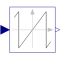
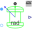

WrapAngleWrap angle to interval ]-pi,pi] or [0,2*pi[ |

|
Information
This information is part of the Modelica Standard Library maintained by the Modelica Association.
This blocks wraps the input angle into the interval ]-pi,pi], if positiveRange == false.
Otherwise the input angle u is wrapped to the interval [0,2*pi[.
Parameters (1)
| positiveRange |
Value: false Type: Boolean Description: Use only positive output range, if true |
|---|
Connectors (2)
| u |
Type: RealInput Description: Connector of Real input signal |
|
|---|---|---|
| y |
Type: RealOutput Description: Connector of Real output signal |
Used in Examples (1)
|
Modelica.Blocks.Examples Evaluation of a sinusoidal encoder |
Used in Components (2)
|
Modelica.Electrical.Machines.Sensors Rotor lagging angle |
|
|  |
Modelica.Magnetic.QuasiStatic.FundamentalWave.Sensors Rotor lagging angle |